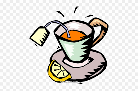

Page 2 — Why It Happened
The main cause was anger about taxation and control from Britain, especially the Tea Act. Even though the tea could be cheaper, many colonists saw the act as Britain forcing them to accept taxes without representation. The protest was about principle more than price, because it challenged Parliament’s authority over the colonies.
This happened during a period of rising tension over several other policies that colonists viewed as unfair. Protests and boycotts had already taken place in different colonies, and Boston became a center of organized resistance. The Boston Tea Party was one of the most dramatic actions taken to send a clear message that these policies would not be accepted.
